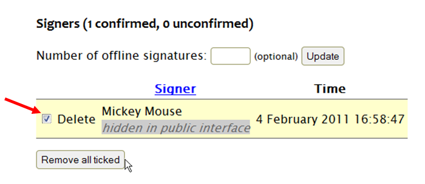
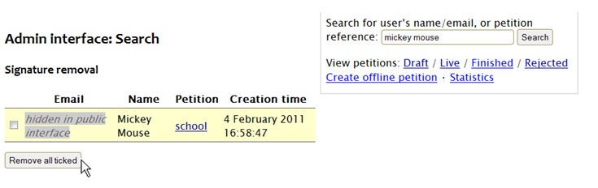

How to remove signatures
You may need to remove a signature if it is obviously false, or if a signer gets in touch to ask for their name to be removed.
There are two ways to remove a signature.
On the relevant petition’s admin page
By the name of each signer there is a checkbox next to the word ‘Delete’. For any signer that you wish to remove, tick the checkbox (as shown below) and then click ‘Remove all ticked’:
By searching for the signer’s name or email address
This method is the easiest way to remove the same person’s signature from multiple petitions.
Use the admin interface’s search box to search for the signer’s name or email address. The process is then the same: tick the checkbox by the relevant signature, and click ‘Remove all ticked’.
